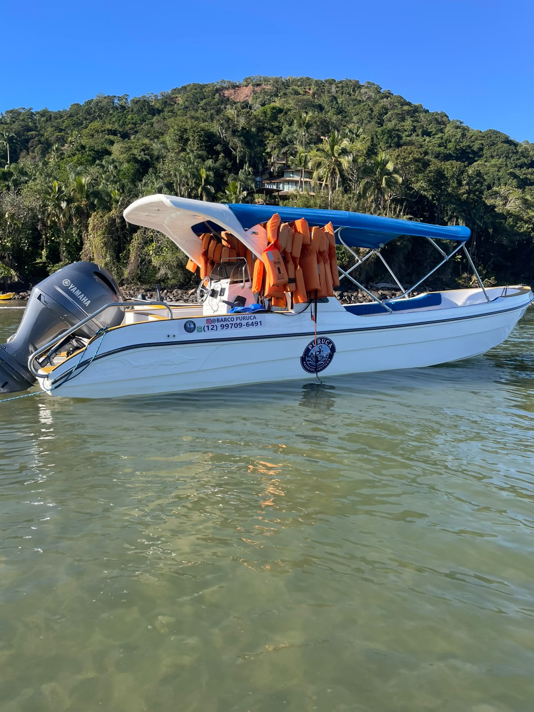
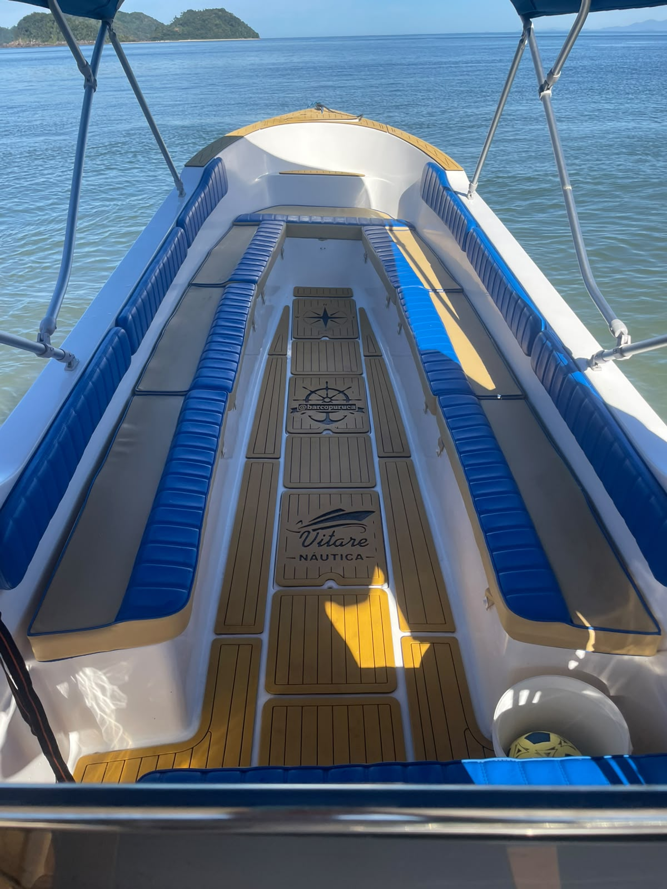
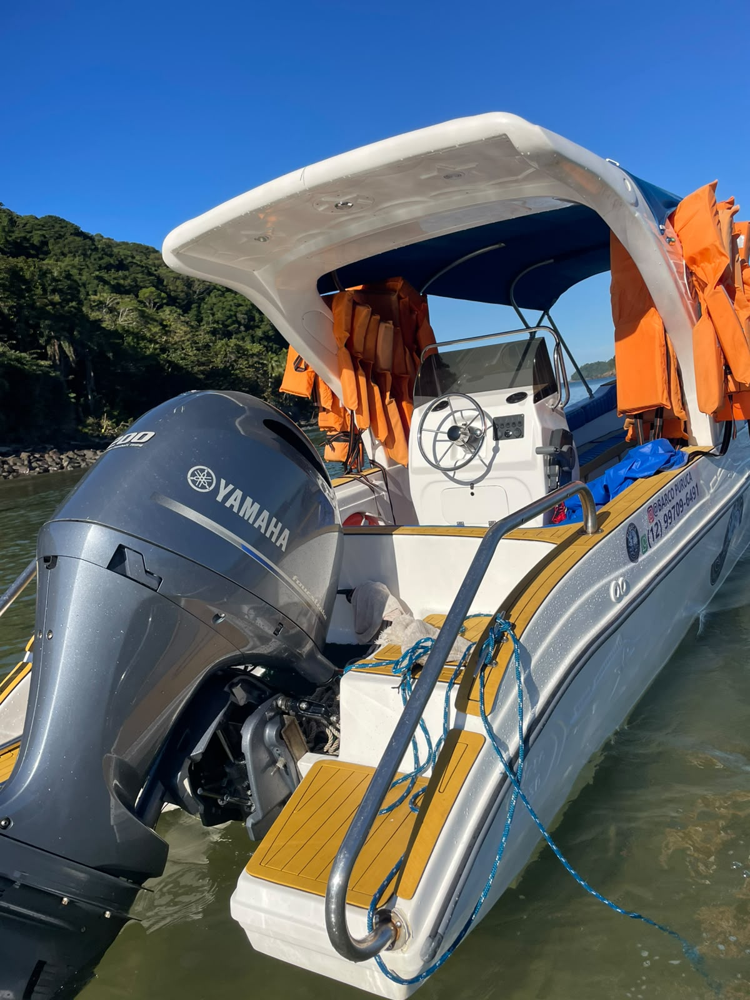

Roteiro 1
Travessia para As Ilhas
- Barra do Sahy
- As Ilhas você escolhe a praia
~5 a 10 minVolta combinadaA partir de 3 pessoas

5 minutos até as piscinas naturais. Lancha própria para até 19 pessoas.





“Super atenciosos e preocupados com a segurança na travessia. Amei e indiquei!”
“Fazemos a travessia com ele há muitos anos. Extremamente confiável e educado.”
“O barco super confortável e o passeio nem se fala, lindo demais!”
Atendemos também quem está em Juquehy e na Praia da Baleia.
Sim. A saída é da Barra do Sahy, pertinho das duas.
Pode! Marque no "Monte seu passeio".
Sim, a gente ajuda a embarcar tudo.
Avisamos antes e reagendamos.
Depende do roteiro e do grupo. Monte o passeio e o Puruca responde no WhatsApp.